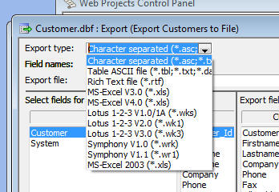

Export Operation - Excel
The 'Classic' Export Operation has an option to export to old Excel 2003 files. The 'Classic' Export Operation only offered Excel V4 files. (You could still export to Excel 2003 using the AlphaDAO export, but this is not as fast as the 'Classic' Export). If you used the 'Classic' Export Operation to create an Excel V4.0 file, the Excel 2010 Beta release was not able to open the file. Now, using the 'MS-Excel 2003' option shown below, the exported file can be opened in Excel 2010 Beta release.
